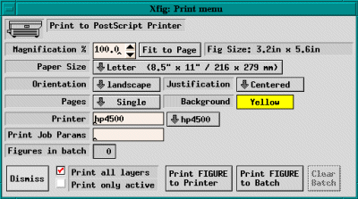
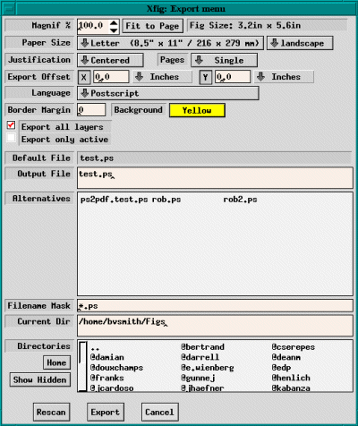
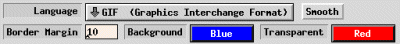
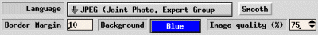

Printing and Exporting
To export or print a Fig file,
xfig calls fig2dev, the post-processor which converts the Fig
file to the desired output language. For printing, this is PostScript.
For exporting, there are a dozen or so languages, including PostScript, EPS,
LaTeX, MetaFont, and bitmap formats such as GIF, JPEG, PPM and several others.
See the Language description of the Exporting section.
This means that you must have fig2dev installed on your system along
with xfig. Fig2dev, which is part of the TransFig
distribution is always available where you find xfig.
See Getting and Installing Xfig for details.
The
Print... entry in the
File menu
(or accelerator
Meta-P) provides the facility
to print figures to PostScript
printers. Use
File/Export if you want to store the output to a file.

 Magnification
Magnification
-
Specify the magnification when printing figure in percent of full size (%).
The default is 100% and may be set by the Fig.magnification resource.
-
Fit to Page
-
Clicking this button will set the Magnification automatically so that
figure size will just fill current Paper Size with at least 1/2
inch margin all around.
-
Orientation
-
Specify the orientation of the output as Landscape (horizontal)
or Portrait (vertical). The default orientation is same as the
orientation of the canvas which may be changed by
Portrait/Landscape
in the View menu.
-
Justification
-
Specify if the figure should be Flush Left or Centered on the
paper of size selected by Paper Size.
-
Paper Size
-
Specify the size of the paper.
The following paper sizes are available:
 Letter (8.5in x 11in)
Letter (8.5in x 11in)
-
Legal (8.5in x 14in)
-
Tabloid (17in x 11in)
-
ANSI A (8.5in x 11in)
-
ANSI B (11in x 17in)
-
ANSI C (17in x 22in)
-
ANSI D (22in x 34in)
-
ANSI E (34in x 44in)
-
ISO A9 (37mm x 52mm)
-
ISO A8 (52mm x 74mm)
-
ISO A7 (74mm x 105mm)
-
ISO A6 (105mm x 148mm)
-
ISO A5 (148mm x 210mm)
-
ISO A4 (210mm x 297mm)
-
ISO A3 (297mm x 420mm)
-
ISO A2 (420mm x 594mm)
-
ISO A1 (594mm x 840mm)
-
ISO A0 (840mm x 1189mm)
-
JIS B10 (32mm x 45mm)
-
JIS B9 (45mm x 64mm)
-
JIS B8 (64mm x 91mm)
-
JIS B7 (91mm x 128mm)
-
JIS B6 (128mm x 182mm)
-
JIS B5 (182mm x 257mm)
-
JIS B4 (257mm x 364mm)
-
JIS B3 (364mm x 515mm)
-
JIS B2 (515mm x 728mm)
-
JIS B1 (728mm x 1030mm)
-
JIS B0 (1030mm x 1456mm)
-
Pages
-
If Multiple is selected here, the figure will be split into multiple
pages if the size of the figure is larger than Paper Size. It allows
the user to output a figure larger than paper size by pasting
those papers together (to make it easier, xfig generates output
so that the parts of the figure will be overlap).
If Single is selected here, this facility will not be used;
any part of the figure outside the paper boundary will be clipped.
-
Background
-
This will set the background color of the whole figure
when printing. The default is white.
-
Printer
-
Specify the printer name output should be directed to. If this field is empty,
output will be directed to the default printer.
The default value is specified by the resource Fig*printer*string
or the environment variable $PRINTER.
If your system uses /etc/printcap to define printers, xfig will make
a pulldown menu of printers next to the entry.
-
Print Job Params
-
The string specified here will be passed as command-line options when executing
lpr (lp on System V system). If %f is included in the string,
(it may appear more than once) it will be replaced by the name of the figure.
The default is empty, but it may be specified by Fig*job_params*string
resource.
-
Figures in batch
-
This indicator shows how many figures have been put in the batch file
for printing. Figures may be printed into the batch file by Print FIGURE
to Batch, and those figures may be sent to the printer as one print job
by clicking on Print BATCH to Printer.
-
Dismiss
-
Clicking this button will close the Print panel. The accelerator Meta-C
will also perform this function.
-
Print all layers/Print only active

-
You may print the whole figure (all layers) or just the layers that are
active according to the depth panel.
-
Print FIGURE/BATCH to Printer
-
Clicking this button will spool the figures in the batch file
if any, or the current figure if none, to the printer.
The accelerator Meta-P will also perform this function.
The label of this button will be Print BATCH to Printer if there
are any figures in the batch file, or Print FIGURE to Printer
if there are none.
When printing to the printer, xfig will first convert the figure
to PostScript with fig2dev
program, and pass the result to lpr (lp on System V system).
When executing lpr (or lp), the printer name specified by
PostScript Printer field and options specified by Print Job Params
will be passed as command-line options.
-
Print FIGURE to Batch
-
Clicking this button will append the current figure to the batch file.
The accelerator Meta-B will also perform this function.
The figures stored in the batch file will be printed to the printer
when Print BATCH to Printer is clicked later. You can use this facility
when you want to send some figures to the printer at one time.
-
Clear Batch
-
Clicking this button will erase the accumulated figures in the batch
file. The accelerator Meta-X will also perform this function.
The figures are automatically deleted from the batch file when
Print BATCH to Printer is clicked.
The
Export... entry in the
File menu
(or accelerator
Meta-X) provides the facility
to output the figure in various format such as PostScript,
GIF, JPEG, HP-GL, etc. to a file.
This is useful when you want to read figures by other applications
(LaTeX or FrameMaker, for example).
See
LaTeX and Xfig for hints about
using
xfig with LaTeX.
Use File/Print if you want to print the
figure to a PostScript printer.

If the export language is GIF,
a menu to select a color which may be considered transparent is offered:

If the export language is JPEG (JFIF),
an entry to select the "quality factor" is offered:

-
Magnification
-
Specify the magnification when exporting figure in percent of full size (%).
The default is 100% and may be set by the Fig.magnification resource.
-
Fit to Page
-
Clicking this button will set the Magnification automatically so that the
figure size will just fill current Paper Size with at least 1/2
inch margin all around. This is effective only when PostScript is
selected as Language.
-
Paper Size
-
Specify the size of the paper. See description in Print
Panel about available paper sizes. This is effective only if PostScript
is selected at Language.
-
Orientation
-
Specify the orientation of the output as Landscape (horizontal)
or Portrait (vertical). The default orientation is same as the
orientation of the canvas which may be changed by
Portrait/Landscape
in the View menu.
-
Justification
-
Specify if the figure should be Flush Left or Centered on the
paper of the size selected by Paper Size. This is effective only if
PostScript is selected at Language.
-
Pages
-
If Multiple is selected, the figure will be split into multiple
pages if the figure is larger than Paper Size. If Single
is selected, this facility will not used. This is effective only if
PostScript is selected at Language.
-
Export Offset
-
When exporting figure, the figure will be shifted to the right or down by the
amount specified here.
Use negative numbers to shift it left and/or up.
The unit of the amounts may be selected from
Inches, Centimeters, and Fig Units(1/1200 inch in version 3.x).
-
Language
-
Specify the format (language) to be generated as output. The default is
Encapsulated PostScript, but may be changed with the resource
Fig.exportLanguage.
The following formats are available:
Vector formats:
-
LaTeX picture environment
-
PicTeX macros
-
IBMGL (HP-GL)
-
Encapsulated PostScript (EPSF)
-
PostScript
-
PDF (Portable Document Format)
-
Combined PostScript/LaTeX
-
Textyl
-
TPIC
-
PIC
-
MF (MetaFont)
-
CGM
(Computer Graphics Metafile - useful to import into Microsoft WORD, etc.)
-
Tk (Tck/Tk toolkit canvas)
-
HTML Image map
Bitmap formats:
-
GIF
Graphic Interchange Format
-
JPEG
-
PCX
Paintbrush format
-
PNG
Portable Network Graphics
-
PPM
Portable Pixmap
-
SLD
(AutoDesk slide format)
-
TIFF
Tag Image File Format
-
XBM
X11 Bitmap
-
XPM
X11 Pixmap
As a variation of the LaTeX format, epic, eepic and eepicemu
macros are also available. It is also possible to output the text part of the
figure in LaTeX and the graphics part in PostScript using Combined PostScript/LaTeX.
This is especially useful when complex numerical formulas are included in
the figure (see also TEXT FLAGS).
Not all of the features in xfig are supported by all export languages.
For example, imported pictures
are not supported for IBMGL export.
The PostScript export language supports all features
of xfig and a fairly high quality output will be generated.
The fig2dev program, part of the TransFig package available with xfig
does the actual conversion from Fig to the output language.
To export the figure in a bitmap format such as GIF or JPEG, you must have the
GhostScript and
netpbm
packages on your system.
-
Smooth
-
If the export language is any of
the bitmap formats, a button labeled Smooth will appear
which will smooth the image by calling fig2dev
(using the `-S 2' option) to force GhostScript to render at
2x magnification which improves font rendering,
then passes through pnmscale to reduce to original size,
which also smooths the image by averaging colors of adjacent pixels.
-
Border Margin
-
When exporting to PostScript, Encapsulated PostScript, HTML MAP, or any
of the bitmap formats (e.g. GIF, JPEG, etc.), you may add a margin
space around the figure. The size of the margin is in pixels or 1/80th inch.
-
Background
-
This will set the background color of the whole figure
when printing. The default is white.
-
Transparent Color
-
For GIF export, it is possible to specify one of the colors as ``transparent''.
When displaying the figure with GIF viewers that support Transparent GIF
(such as Netscape Navigator, for
example), the color will not appear but the background of the viewer will show
through in place of the color. This menu button will only appear for GIF export.
The default is None.
-
Export all layers/Export only active
-
You may export the whole figure (all layers) or just the layers that are
active according to the depth panel.
-
Default Filename
-
Output will be written to this file if Output Filename is empty.
This file name is the figure name plus an extension that reflects the output
format at the default, and it will be changed to the specified file name if
export has been performed by specifying a file name in Output Filename.
-
Output Filename
-
Specify the file name the output should be written to. If this field is
empty, the file name in the Default Filename field will be used.
The file name in the Output Filename field may be changed by selecting
a file name in the Fig Files list, or typing the file name from
keyboard directly. If return is typed after file name is entered,
export to the file will be performed as if the Export button was clicked.
-
Alternatives
-
The list of files in the current directory (only files matching the pattern specified
by Filename Mask) are displayed, and users may select a file for output
from the list.
Clicking a file name in this list with mouse button 1 will copy the file name
to the Output Filename field. Double-clicking a file name in this list
with mouse button 1 will cause exporting to the file as if Export
button was clicked. Note that exporting to the existing file will over-write
the old contents of the file.
-
Filename Mask
-
Only the files matching this pattern will be put in the File
Alternatives list. The pattern is similar to the one used
by the UNIX shell, and it is possible to use meta-characters like ``*''
or ``?''.
Typing return in this field will cause rescan of the current directory
as if Rescan button was clicked.
This string will be changed according to the language
selected with the Language menu.
-
Current Dir
-
This shows the current directory, and files in the directory will be displayed
in the Alternatives list.
The directory name in the Current Dir field may be changed
by clicking a directory name in Directories list, or by
typing the directory name from keyboard directly. If return is typed
after directory name is entered, the directory will scanned as if Rescan
button was clicked and the contents of Alternatives list will be updated.
-
Directories
-
The list of directories in the current directory is displayed here, and clicking
any item in this list with mouse button 1 will cause a move to the directory.
Normally, hidden directories are not displayed here, but this may be
toggled by Show Hidden button.
``..'' indicates the parent directory. Moving to the parent directory
may also be performed by clicking mouse button 3 on the Alternatives
list or the Directories list.
-
Home
-
Clicking this button will move to the home directory of the user.
-
Show Hidden
-
This button controls if hidden directories (directories whose names start
with ``.'') should be displayed or not. Clicking this button will
toggle the state. Normally, hidden directories are not displayed.
-
Rescan
-
Clicking this button will scan files in the current directory
and update the Alternatives list. The accelerator Meta-R
will also perform this function.
-
Cancel
-
Clicking this button will close the Export panel. The accelerator Meta-C
will also perform this function.
-
Export
-
Clicking this button will export to the file specified by Output
Filename field if any, or the file in Default Filename.
The accelerator Meta-X will also perform this function.
When trying to export to an existing file other than Default Filename,
popup panel will appear and the user will asked to confirm the export operation.
If the figure is exported to a file other than Default Filename,
then Default Filename will be set to the actual export file name.
Here are some helpful hints for using
xfig and
LaTeX.
This description is derived from the text
written by Eric Masson (
[email protected]).
HOW TO IMPORT XFIG FIGURES IN YOUR LATEX FILES
When you call xfig use the following command line:
xfig -specialtext -latexfonts -startlatexFont default
If you want ALL of your figures to be started with
special text and
LaTeX fonts,
you can set the following resources in your .Xresources
or whatever resource file you use:
Fig.latexfonts: true
Fig.specialtext: true
There are several formats to which xfig can generate output and
LaTeX can read. I will only cover three cases:
- Export Fig format directly into LaTeX form
- Export Fig in encapsulated PostScript (EPS) and import the
PostScript in LaTeX.
- Save the figure partly in PostScript and partly in LaTeX
form and superimpose them in your document.
All three methods have their advantages and are equally simple
to handle. In method (A) the advantage is that all your work
is in tex form and that your DVI files will hold all the necessary
information. In (B) you have all the power and fonts of PostScript
at your disposal. In (C) you get the drawing power of PostScript
and the typesetting of LaTeX for your strings.
In your LaTeX preamble (the part that preceeds your
\begin{document} statement) place the following lines:
\input{psfig}
So your preamble could look like:
\documentstyle[12pt,bezier,amstex]{article} % include bezier curves
\renewcommand\baselinestretch{1.0} % single space
\pagestyle{empty} % no headers and page numbers
\oddsidemargin -10 true pt % Left margin on odd-numbered pages.
\evensidemargin 10 true pt % Left margin on even-numbered pages.
\marginparwidth 0.75 true in % Width of marginal notes.
\oddsidemargin 0 true in % Note that \oddsidemargin=\evensidemargin
\evensidemargin 0 true in
\topmargin -0.75 true in % Nominal distance from top of page to top of
\textheight 9.5 true in % Height of text (including footnotes and figures)
\textwidth 6.375 true in % Width of text line.
\parindent=0pt % Do not indent paragraphs
\parskip=0.15 true in
\input{psfig} % Capability to place PostScript drawings
\begin{document}
\end{document}
TYPE A - Exporting directly to LaTeX form
In terms of drawing capabilities this is the weakest form you can use.
Lines in LaTeX can only be drawn at some specific angles.
And lines with arrows can only be drawn at more limited angles.
Several features such as ellipses, splines, etc. are not supported
(xfig does not take advantage of available LaTeX macro packages
such as bezier).
When drawing lines for type A drawings make
sure you restrict yourself to the proper
angle geometry in xfig.
Otherwise when you export your figures to LaTeX format, xfig
will approximate your lines to the nearest angle available in LaTeX.
Usually this has unpleasant results.
In this mode, you can type any LaTeX string on your
figure. Once imported to LaTeX, the string will be interpreted
properly. For example:
$\int_0^9 f(x) dx$
would result in a integration from 0 to 9 of the function f(x).
To create your LaTeX file just choose the
Export... from the
File menu of
xfig.
Then select
LaTeX picture as the
language to export.
This will create a file with a
.latex extension which
you can then call directly into your LaTeX document.
For example this code would import the file yourfile.latex
directly into LaTeX file:
\begin{figure}[htbp]
\begin{center}
\input{yourfile.latex}
\caption{The caption on your figure}
\label{figure:yourreferencename}
\end{center}
\end{figure}
TYPE B - Exporting to Encapsulated PostScript
There are no limitations in drawing figures of this type. Except that
one cannot use LaTeX command strings in this format. However all
of the many fonts of PostScript are available when this format is selected.
Once you are done drawing your figure
simply choose the Export... from the
File menu of xfig.
Then select Encapsulated PostScript as the
language to export.
This will create a .eps file which you can then
include into you LaTeX ducument in the following way:
\begin{figure}[htbp]
\begin{center}
\psfig{file=yourfile.eps}
\end{center}
\caption{Your caption}
\label{figure:yourreference}
\end{figure}
Note: This method may not be available in some environments.
Also, this can generate DVI file which is not fully portable.
TYPE C - PostScript/LaTeX format
You can draw any lines or curves when using this format.
In this type of export, LaTeX strings are permitted
you also have the PostScript fonts available to you. Therefore
you can type in strings such as
$\int_0^9 f(x) dx$
and they will be processed by LaTeX.
Note that you must set
Special flag ON
for texts you want to output in LaTeX,
and set it OFF for texts you want to output in PostScript.
To export in this format, simply choose the Export... from the
File menu of xfig.
Then select Combined PostScript/LaTeX (both part) as the
language to export.
This will create a file with a .pstex_t extension
which you can then call directly into your LaTeX document,
and a file with a .pstex extension
which contains PostScript part of the figure.
The .pstex_t file automatically calls the .pstex file
and you do not need to include it explicitly in your tex file.
To include your figure just use something similar to this:
\begin{figure}[htbp]
\begin{center}
\input{yourfigure.pstex_t}
\caption{Your figure}
\label{figure:example}
\end{center}
\end{figure}
N.B. You might want to edit the .pstex_t files created by xfig.
When it refers to the other file (.pstex) it automatically
gives the path specification to the .pstex file. This
can be an inconvenience if you move your files to another directory
because your LaTeX processing will fail. I personally prefer to
remove the full path specification and only keep the filename.
SOME OTHER NOTES
You can
import
Encapsulated PostScript files into your Fig files.
This is useful if you want to doodle on top of outputs from other
programs. For example you could include a MATLAB drawing and identify
points of interest with strings, lines, circles, etc. Starting from
version 2.1.7 of xfig there is a hook to
GhostScript which permits
you to view the PostScript in your drawing. A neat feature.
Use ps2epsi in GhostScript to encapsulate your PostScript file
if you only have .ps files.
If it is necessary, you may use convert PostScript to Fig file
with pstoedit.
Changing the size of pictures in pstex_t
From Stephen Eglen (
[email protected])
If you just include the picture using
\input{file.psttext_t}
there is no way of specifying the size of the picture.
There are two solutions to this:
-
Draw it the right size in xfig to start with.
Or, when you are exporting the figure,
change the magnification of the picture by
using the magnification box in the export window. Either way you
have to go back into xfig if you don't like the size of the image in
your LaTeX document.
-
Get LaTeX to change the size of the picture, using either \scalebox
or \resizebox. These are general functions for scaling text or
pictures from the graphics package:
\scalebox{factor}{object}
Will scale the object by any factor.
Factor is just a number
(reduction if less than 1, enlargement if larger than 1).
Object is normally some text or graphics
eg: \scalebox{2}{ \input{file.pstex_t} }
will scale the picture by 2, dependent on driver (.ps works, but xdvi
wont). Scaling bitmap fonts may produce ugly results, so try and
avoid them!
\resizebox{width}{ht} {stuff}
will resize "stuff" to be of size width x ht. Using "!" as an argument
retains the aspect ratio of the box.
eg \resizebox{5cm}{!}{fat cat}
will make "fat cat" appear 5 cm wide, and suitably high.
(From p129, Lamport)
It is possible to generate image map (clickable map) of HTML 3.2
by selecting
HTML Image Map as
Language
on the
Export panel.
To use this facility,
using Comments on the Edit panel,
comment like:
HREF="url" ALT="string"
must be set for objects you want to make it clickable.
Here, url is URL of the target of the link,
string is alternative string for browsers
which will not display images
(ALT attribute is required in HTML 3.2).
string will be used as label of alternative text links
xfig will generate with the image map, too.
TEXT objects can't be used for links.
CIRCLE, ELLIPSE, SPLINE and ARC will be approximated with polygons.
Open objects such as POLYLINE or OPEN SPLINE will be
treated as if it is closed.
ARC-BOX will treated as if is is a BOX.
[
Contents |
Introduction |
Credits ]